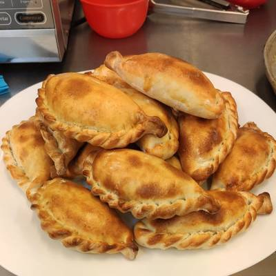

Empanadas

ingredients
- 12 covers for empanadas
- 1/2 kg. minced meat
- 2 onions
- 2 dientes de ajo
- 1/2 pimiento morrón rojo
- 1 tomato
- 2 tbsp. tomato puree
- Peppers
- salt and pepper
Step by step
- In a pot with hot oil add the onion and the bell pepper. Let brown for a few minutes and when they are half cooked (transparent onion), add the garlic and a little salt and pepper.
- Raise the heat and add all the minced meat at once. Move the meat so it doesn't stick. When the meat is sealed, add the diced tomato and the 2 tablespoons of tomato puree. Season with paprika and cumin, a little more salt and pepper and mix well. Cover (not completely, leave a small hole) and cook for half an hour, stirring little by little.
- Remove from the heat and let cool in the pot.In this step you can add anything else you want: hard-boiled egg, raisins, potatoes, etc.
- Distribute the filling in the empanada covers, and close with a traditional repulgue. Before putting them in the oven you can paint them with egg, but it is very comfortable and optional.
- Put our meat empanadas on a plate and bake in a strong oven until golden brown and enjoy!
And that is how is made the empanadas